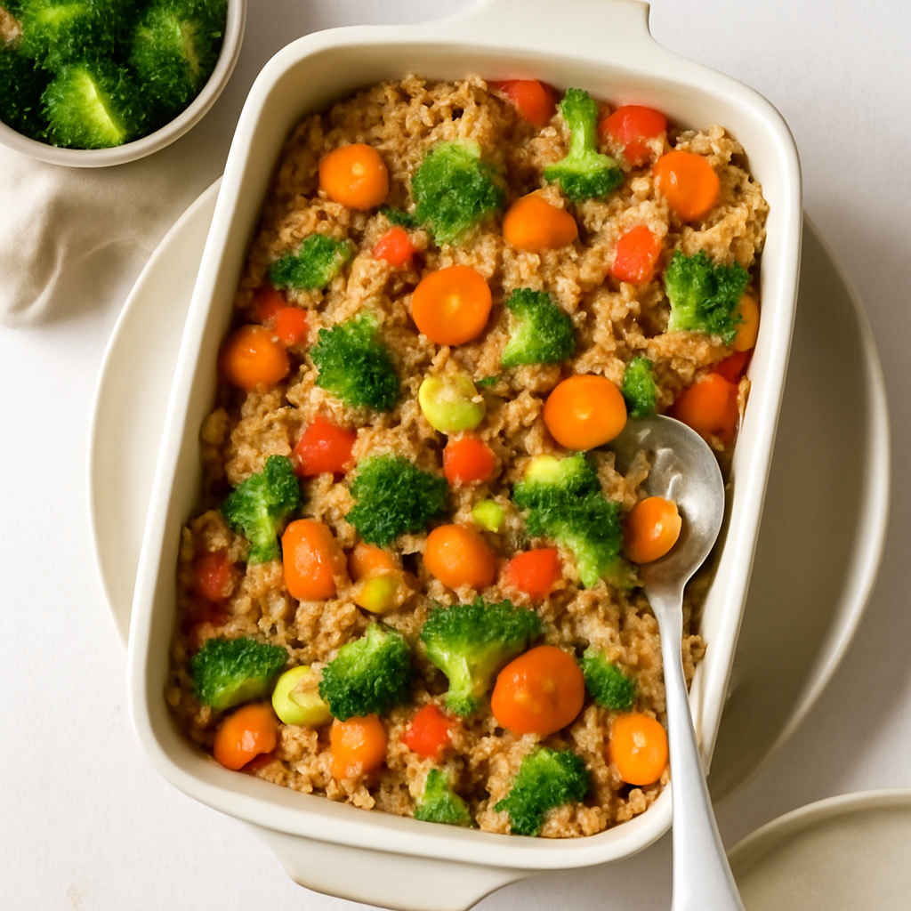

Monday — Quinoa Vegetable Bake

Cook Time: 40 minutes
Method: Oven
vegetarianquinoaoven
Ingredients for 6
- 2 cups organic quinoa
- 4 cups vegetable broth
- 1 cup organic bell peppers, chopped
- 1 cup organic zucchini, chopped
- 1 cup organic spinach, chopped
- 1 teaspoon garlic powder
- Salt to taste
- 1 teaspoon dried basil
- 1 tablespoon olive oil
Instructions
- Preheat oven to 375°F (190°C).
- Rinse quinoa and combine with vegetable broth in a baking dish.
- Add bell peppers, zucchini, spinach, and seasonings.
- Stir in olive oil and bake for 30 minutes.
- Fluff with a fork before serving.
Toddler Notes
- Quinoa should be soft; mash lightly if needed.
- Chop vegetables into small pieces.
← Back to weekly plan